- Data
- MixIT (TF-GridNet)
- RemixIT w/ CS (TF-GridNet)
- Self-REmixing w/ CS (TF-GridNet)
- RemixIT w/o CS (TF-GridNet)
- Self-Remixing w/ CS -> w/o CS (TF-GridNet)
NOTE: Output order of the three separated signals are aligned with the ground-truth audios (two speech and a noise).
Input mixture and clean speeches
| Mixture 1 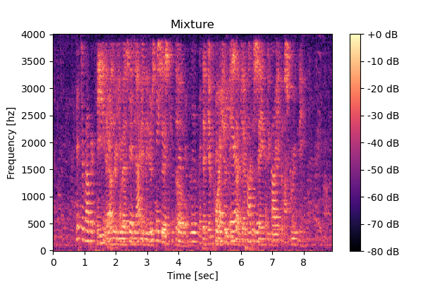 |
Mixture 2 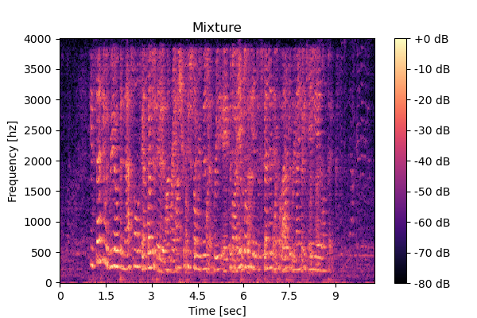 |
| Mixture 1 Clean speech1 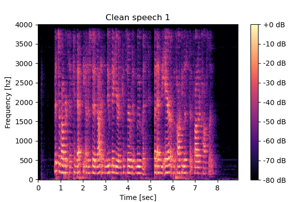 |
Mixture 1 Clean speech2 
|
Mixture 2 Clean speech1 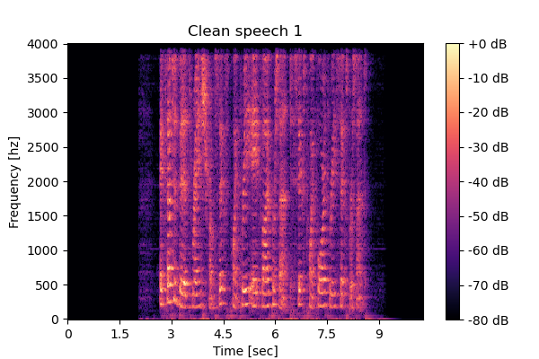 |
Mixture 2 Clean speech2 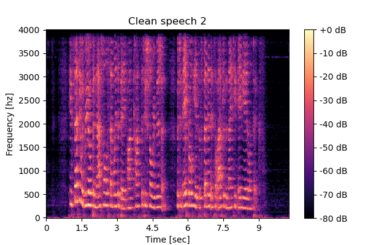 |
MixIT
| Mixture 1 Estimated speech1 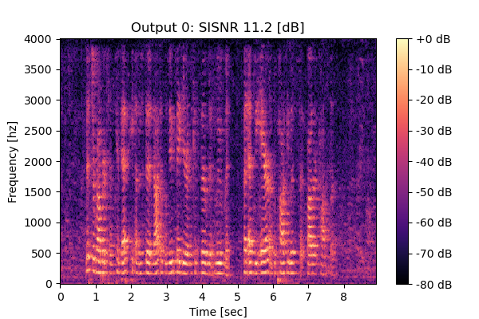 |
Mixture 1 Estimated speech2 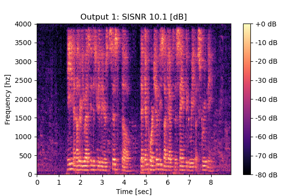 |
Mixture 2 Estimated speech1 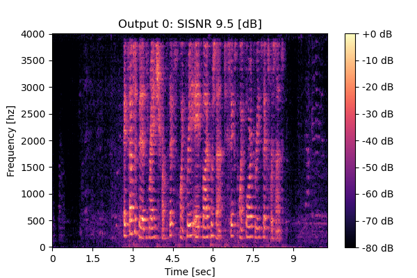 |
Mixture 2 Estimated speech2 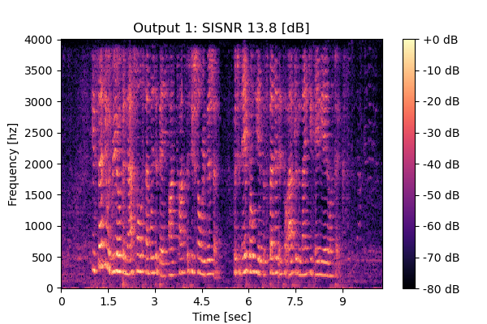 |
RemixIT w/ CS
| Mixture 1 Estimated speech1 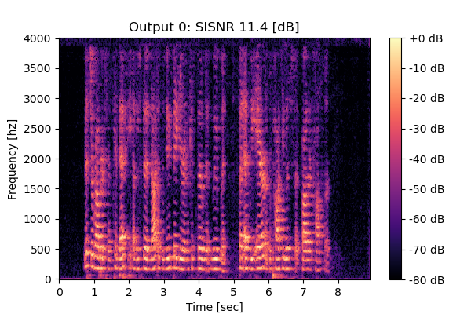 |
Mixture 1 Estimated speech2 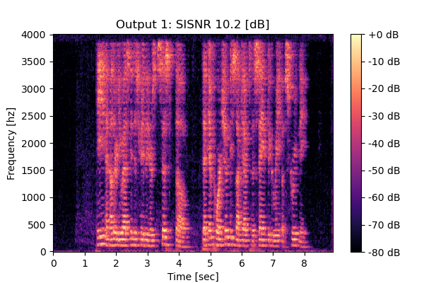 |
Mixture 2 Estimated speech1 |
Mixture 2 Estimated speech2 |
Self-Remixing w/ CS
| Mixture 1 Estimated speech1 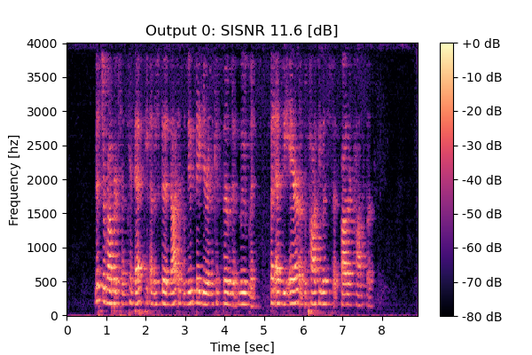 |
Mixture 1 Estimated speech2 |
Mixture 2 Estimated speech1 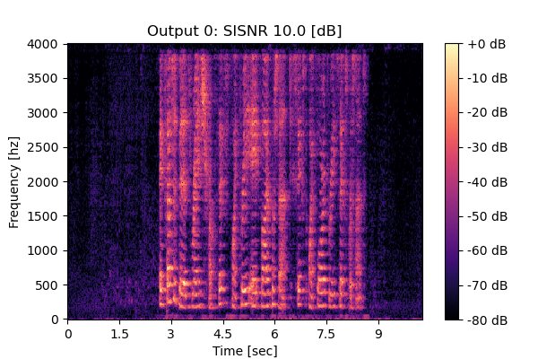 |
Mixture 2 Estimated speech2 |
RemixIT w/o CS
| Mixture 1 Estimated speech1 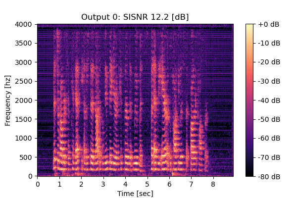 |
Mixture 1 Estimated speech2 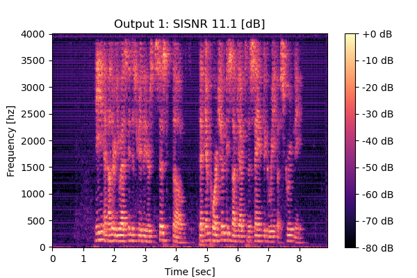 |
Mixture 2 Estimated speech1 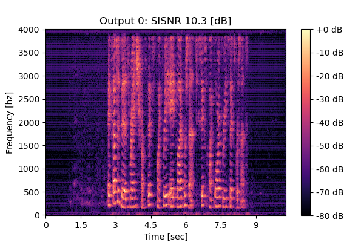 |
Mixture 2 Estimated speech2 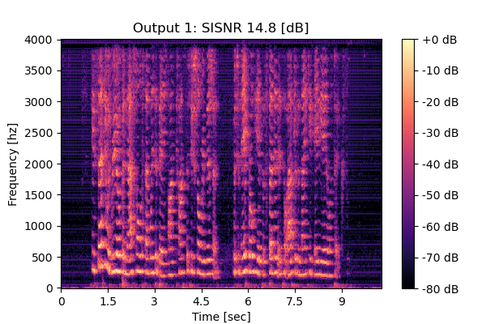 |
Self-Remixing w/o CS
| Mixture 1 Estimated speech1 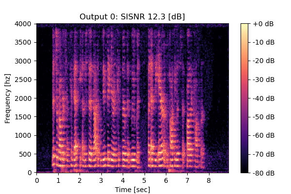 |
Mixture 1 Estimated speech2 |
Mixture 2 Estimated speech1 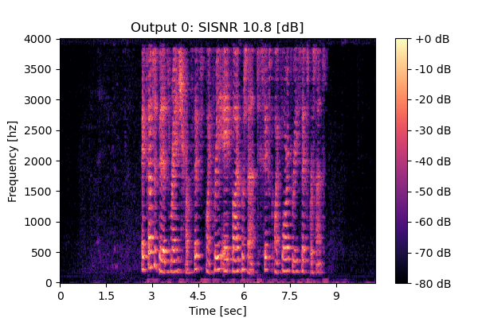 |
Mixture 2 Estimated speech2 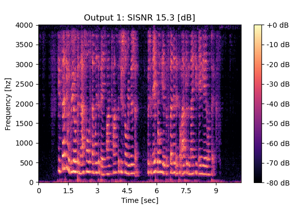 |